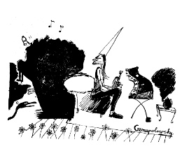

Okin Cznupolowsky'S LULLABY
Okin Cznupolowsky – D 2015
10 min – VHS
B+P: Okin Cznupolowsky
„Oh welch gemütliche Konditorei, die ist ja wie gemacht für zwei.“
Okin und Vanessa haben eine spezielle Konditorei ausfindig gemacht: Das Nothosaurus-Café.
Während sich die beiden dort gegenseitig neue Gedicht-Entwürfe vorlesen, spielt die Music-Box im Eck Melodien zum Mitsummen und Grinsen.
dienstag 13 okt 22.30 uhr werkstattkino
Okin Cznupolowsky geb.1985 in München, studiert Malerei und Grafik an der Akademie der Bildenden Künste München.
Filme (Auswahl) Chiogga 2004 – Jägerin am Ufer 2013 – Kolyma Beach, second act 2014 – Okin Cznupolowsky’s Playground 2014 (9. UX) – Okin Cznupolowsky's Lullaby 2015